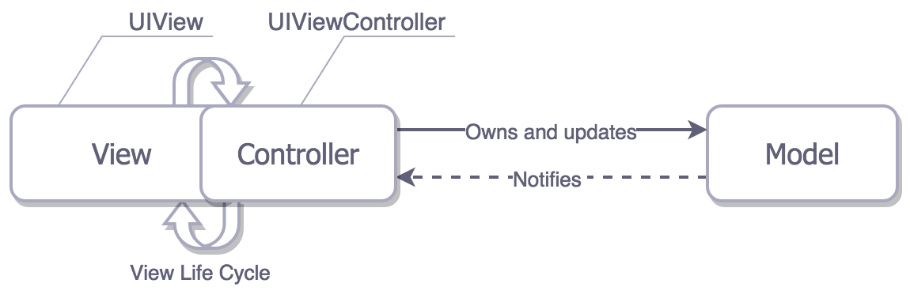

计算机部分
设计模式
- 策略模式（Strategy），它定义了算法家族，分别封装起来，让它们之间可以互相替换，此模式让算法的变化，不会影响到使用算法的客户。
- 装饰模式（Decorator），动态地给一个对象添加一些额外的职责，就增加功能来说，装饰模式比生成子类更为灵活。
- 代理模式（Proxy），为其他对象提供一种代理以控制对这个对象的访问。
- 工厂方法模式（Factory Method），定义一个用于创建对象的接口，让子类决定实例化哪一个类。工厂方法使一个类的实例化延迟到其子类。
- 原型模式（Prototype），用原型实例指定创建对象的种类，并且通过拷贝这些原型创建新的对象。
- 模板方法模式（Template Method），定义一个操作中的算法的骨架，而将一些步骤延迟到子类中。模板方法使得子类可以不改变一个算法的结构即可重定义该算法的某些特定步骤。
- 外观模式（Facade），为子系统中的一组接口提供一个一致的界面，此模式定义了一个高层接口，这个接口使得这一子系统更加容易使用。
- 建造者模式（Builder），将一个复杂对象的构建与它的表示分离，使得同样的构建过程可以创建不同的表示。
- 观察者模式（Observer），定义了一种一对多的依赖关系，让多个观察者对象同时监听某一个主题对象。这个主题对象在状态发生变化时，会通知所有观察者对象，使它们能够自动更新自己。
- 抽象工厂模式（Abstract Factory），提供一个创建一系列相关或相互依赖对象的接口，而无需指定它们具体的类。
- 状态模式（State），当一个对象的内在状态改变时允许改变其行为，这个对象看起来像是改变了其类。
- 适配器模式（Adapter），将一个类的接口转换成客户希望的另外一个接口。Adapter 模式使得原本由于接口不兼容而不能一起工作的那些类可以一起工作。
- 备忘录模式（Memento），在不破坏封装性的前提下，捕获一个对象的内部状态，并在该对象之外保存这个状态。这样以后就可将该对象恢复到原先保存的状态。
- 组合模式（Composite），将对象组合成树形结构以表示‘部分-整体’的层次结构。组合模式使得用户对单个对象和组合对象的使用具有一致性。
- 迭代器模式（Iterator），提供一种方法顺序访问一个聚合对象中各个元素，而又不暴露该对象的内部表示。
- 单例模式（Singleton），保证一个类仅有一个实例，并提供一个访问它的全局访问点。
- 桥接模式（Bridge），将抽象部分与它的实现部分分离，使它们都可以独立地变化。
- 命令模式（Command），将一个请求封装为一个对象，从而使你可用不同的请求对客户进行参数化；对请求排队或记录请求日志，以及支持可撤销的操作。
- 职责链模式（Chain of Responsibility），使多个对象都有机会处理请求，从而避免请求的发送者和接收者之间的耦合关系。将这个对象连成一条链，并沿着这条链传递该请求，直到有一个对象处理它为止。
- 中介者模式（Mediator），用一个中介对象来封装一系列的对象交互。中介者使各对象不需要显式地相互引用，从而使其耦合松散，而且可以独立地改变它们之间的交互。
- 享元模式（Flyweight），运用共享技术有效地支持大量细粒度的对象。
- 解释器模式（Interpreter），给定一个语言，定义它的文法的一种表示，并定义一个解释器，这个解释器使用该表示来解释语言中的句子。
- 访问者模式（Visitor），表示一个作用于某对象结构中的各元素的操作。它使你可以在不改变各元素的类的前提下定义作用于这些元素的新操作。
设计模式的基本原则
- 单一职责原则（SRP），就一个类而言，只做一件事。
- 开放-封闭原则（OCP），是说软件实体（类、模块、函数等等）应该可以拓展，但是不可修改。
- 依赖倒转原则（DIP），A. 高层模块不应该依赖低层模块，两个都应该依赖抽象。B. 抽象不应该依赖细节，细节应该依赖抽象。
- 里氏代换原则（LSP），子类型必须能够替换掉它们的父类型。
- 迪米特法则（LoD），如果两个类不必彼此直接通信，那么这两个类就不应当发生直接的相互作用。如果其中一个类需要调用另一个类的某一个方法的话，可以通过第三者转发这个调用。
- 合成/聚合复用原则（CARP），尽量使用合成/聚合，尽量不要使用类继承。
什么是 TCP / UDP
答：TCP：传输控制协议。 UDP：用户数据协议。TCP 是面向连接的，建立连接需要经历三次握手，是可靠的传输层协议。 UDP 是面向无连接的，数据传输是不可靠的，它只管发，不管收不收得到。 简单的说，TCP 注重数据安全，而 UDP 数据传输速度快，但安全性一般。
通信底层原理（OSI 七层模型）
答：OSI 采用了分层的结构化技术，共分七层： 物理层、数据链路层、网络层、传输层、会话层、表示层、应用层。
iOS 部分
MVC、MVP、MVVM
理想的 MVC
iOS 中的 MVC

MVP

MVVM

由于 Apple 的规范，一个界面的呈现都需要一个 ViewControoller，而每个 ViewController 内都有一个根 View，这导致 Controller 和 View 紧密的耦合在一起，违背了 MVC 的初衷。容易造成massive controller现象。
胖 Model 和瘦 Model 取舍
答：两种都是可行的方案，要是情况而定，个人更偏向瘦 Model 的模式。
MVVM 与双向绑定的结合
如何高性能的为视图加圆角
答：
- 通过设置 CALayer 的 mask 属性来切，这个无法避免离屏渲染，不推荐。
- 通过 UIGraphicsBeginImageContextWithOptions()创建一个 Image 的图形上下文，在上面绘制 path 并裁剪，最终生成新的 UIImage，这个可行，但是图片尺寸是有限制的，如果 size 过大，会导致内存暴涨，易奔溃。
- iOS 9 之后，UIImageView 设置 png 格式的图片时，并且没有 backgroundColor 时，设置其 layer 的 cornerRadius 不会触发离屏渲染。
- iOS10 以后，使用 UIGraphicsImageRenderer 类的 UIGraphicsBeginImageContextWithOptions()方法。
APNS 发送系统消息的机制
答：APNS 优势：杜绝了类似安卓那种为了接受通知不停在后台唤醒程序保持长连接的行为，由 iOS 系统和 APNS 进行长连接替代。
- 应用在通知中心注册，由 iOS 系统向 APNS 请求返回设备令牌(device Token)
- 应用程序接收到设备令牌并发送给自己的后台服务器
- 服务器把要推送的内容和设备发送给 APNS
- APNS 根据设备令牌找到设备，再由 iOS 根据 APPID 把推送内容展示
IBOutlet 连出来的视图属性为什么可以被设置成 weak
答：在 storyboard 中添加一个控件引用关系是这样的(以 UIButton 为例): UIViewController -> UIView -> UIButton
此时 UIViewController 强引用着 UIView, UIView 强引用着 UIButton, IBoutlet 连线到控制器的.m 或者.h 中作为视图的属性时用 weak 修饰就可以了, (觉得用 strong 修饰也可以但是没有必要)。添加到子控件也是强引用:UIButton 就是添加到了 UIViewController 的 view 上。
Objective-C 部分
浅拷贝和深拷贝的区别
答：浅拷贝是指复制指向对象的指针，而不是复制对象本身。深拷贝：复制对象本身，两者完全独立。
用@property 声明 NSString / NSArray / NSDictionary 经常使用 copy 关键字，为什么？如果改用 strong 关键字，可能造成什么问题
答：
- 因为父类指针可以指向子类对象，使用 copy 的目的是为了让本对象的属性不受外界影响，使用 copy 无论为传入一个可变对象还是不可变对象，我本身持有的就是一个不可变的副本。
- 如果使用 strong，那么这个属性就有可能指向一个可变对象，如果这个可变对象在外部被修改了，那么会影响该属性。
总结：使用 copy 的目的是，防止把可变类型的对象赋值给不可变类型的对象时，可变类型对象的值发生变化会无意间篡改不可变类型对象原来的值。
关于复制的两个方法 copy 和 mutableCopy
答：copy 返回的是不可变对象，mutableCopy 返回的是可变对象。
对于非集合类型不可变对象：copy 是指针复制，mutableCopy 是内容复制。
对于非集合类型的可变对象：copy 和 mutableCopy 都是内容复制。
对于集合类型不可变对象：copy 是指针复制，mutableCopy 是单层内容复制。
对于集合类型的可变对象：copy 和 mutableCopy 都是单层内容复制。
单层内容复制：仅限于对象本身，集合内的对象任是指针复制。
@property 中 retain 和 copy 生成的 setter 方法的区别
答：
retain:1
2
3
4
5- (void)setName:(NSString *)str {
[str retain];
[_name release];
_name = str;
}
copy1
2
3
4
5- (void)setName:(NSString *)str {
id t = [str copy];
[_name release];
_name = t;
}
PS：所以 copy 关键词和可变类型是不能搭配的，如果调用的可变对象的方法，会提示找不到方法，因为 copy 返回的是不可变对象
Objective-C 中的内存管理
答：主要有三种：MRC，ARC，AutoRelease Pool。
Objective-C 中的线程管理
答：主要有三种：NSThread，NSOperation，GCD。
分类和扩展有什么区别
答：分类（Category）是表示一个指向分类的结构体的指针。原则上它只能增加方法，不能增加成员（实例）变量，因为分类的结构体指针中没有属性列表。
扩展（Extension）是分类（Category）的一个特例。类扩展与分类相比只少了分类的名称，所以称之为“匿名分类”。
分类有哪些局限性？分类的结构体里面有哪些成员
答：
①分类中原则上只能增加方法（能添加属性的的原因只是通过 runtime 解决无 setter/getter 的问题而已）；
②类扩展不仅可以增加方法，还可以增加实例变量（或者属性），只是该实例变量默认是@private 类型的（用范围只能在自身类，而不是子类或其他地方）；
③类扩展中声明的方法没被实现，编译器会报警，但是分类中的方法没被实现编译器是不会有任何警告的。这是因为类扩展是在编译阶段被添加到类中，而分类是在运行时添加到类中。
④类扩展不能像类别那样拥有独立的实现部分（@implementation 部分），也就是说，类扩展所声明的方法必须依托对应类的实现部分来实现。
⑤定义在 .m 文件中的类扩展方法为私有的，定义在 .h 文件（头文件）中的类扩展方法为公有的。类扩展是在 .m 文件中声明私有方法的非常好的方式。
Category 是表示一个指向分类的结构体的指针，其定义如下：1
2
3
4
5
6
7
8typedef struct objc_category *Category;
struct objc_category {
char *category_name OBJC2_UNAVAILABLE; // 分类名
char *class_name OBJC2_UNAVAILABLE; // 分类所属的类名
struct objc_method_list *instance_methods OBJC2_UNAVAILABLE; // 实例方法列表
struct objc_method_list *class_methods OBJC2_UNAVAILABLE; // 类方法列表
struct objc_protocol_list *protocols OBJC2_UNAVAILABLE; // 分类所实现的协议列表
}
分类的格式：1
2
3
4@interface 待扩展的类（分类的名称）
@end
@implementation 待扩展的名称（分类的名称）
@end
类扩展格式：1
2
3
4@interface XXX ()
//私有属性
//私有方法（如果不实现，编译时会报警,Method definition for 'XXX' not found）
@end
为什么说 Objective-C 是动态运行时语言
答：将数据类型的确定由编译时，推迟到了运行时。Runtime 可以使我们在运行时才决定一个对象。
为什么 delegate 属性都用 weak 而不是 retain / strong
答：利用 weak 实现弱引用，避免发生循环引用。
被 weak 修饰的对象在被释放的时候会发生什么
答：以下流程：
- objc_release
- 因为引用计数为 0 所以执行 dealloc
- _objc_rootDealloc
- object_dispose
- objc_destructInstance
- objc_clear_deallocating
其中调用 objc_clear_deallocating 的动作如下：
- 从 weak 表中获取废弃对象的地址为键值的记录。
- 将包含在记录中的所有附有__weak 修饰符变量的地址，赋值为 nil
- 从 weak 表中删除记录
- 从引用计数表中删除废弃对象的地址作为键值的记录
weak 是如何实现的？知道 sideTable 么？里面的结构可以画出来么
答：1
2
3
4
5
6
7
8
9struct SideTable {
// 自旋锁，用来保证线程安全
spinlock_t slock;
// 引用计数表
RefcountMap refcnts;
// weak 表
weak_table_t weak_table;
...
};
SideTable，它用来管理引用计数表和 weak 表，并使用 spinlock_lock 自旋锁来防止操作表结构时可能的竞态条件。它用一个 64*128 大小的 uint8_t 静态数组作为 buffer 来保存所有的 SideTable 实例。这个结构体里面包含三个变量，第一个 spinlock_t,它是一个自旋锁，用来保证线程安全。第二个 RefcountMap,是引用计数表，每个对象的引用计数保存在全局的引用计数表中，一个对象地址对应一个引用计数。第三个就是 weak 表，所有的 weak 变量会被加入到全局的 weak 表中，表的 key 是 weak 修饰的变量指向的对象， value 值就是 weak 修饰的变量。1
2
3
4
5
6
7
8
9
10struct weak_table_t {
// 保存了所有指向指定对象的 weak 指针
weak_entry_t *weak_entries;
// 存储空间，即 entries 的数目
size_t num_entries;
// 参与判断引用计数辅助量
uintptr_t mask;
// hash key 最大偏移量
uintptr_t max_hash_displacement;
};
这个是全局弱引用的 hash 表。它的作用就是在对象执行 dealloc 的时候将所有指向该对象的 weak 指针的值设为 nil, 避免悬空指针。它使用不定类型对象的地址的 hash 化后的数值作为 key，用 weak_entry_t 类型的结构体对象作为 value。其中 weak_entry_t 是存储在弱引用表中的一个内部结构体，它负责维护和存储指向一个对象的所有弱引用 hash 表。1
2
3
4
5
6
7
8
9
10
11
12
13
14
15
16
17
18
19// 存储在弱引用表中的一个内部结构体
struct weak_entry_t {
DisguisedPtr<objc_object> referent; // 封装 objc_object 指针，即 weak 修饰的变量指向的对象
union {
struct {
weak_referrer_t *referrers;
uintptr_t out_of_line : 1; // LSB 最低有效元 当标志位为0时，增加引用表指针纬度，
// 当其为0的时候， weak_referrer_t 成员将扩展为静态数组型的 hash table
uintptr_t num_refs : PTR_MINUS_1; // 引用数值，这里记录弱引用表中引用有效数字，即里面元素的数量
uintptr_t mask;
uintptr_t max_hash_displacement; // hash 元素上限阀值
};
struct {
// out_of_line=0 is LSB of one of these (don't care which)
weak_referrer_t inline_referrers[WEAK_INLINE_COUNT];
};
};
};
KVC 的底层实现
答：KVC（key-Value coding） 键值编码，指 iOS 开发中，可以允许开发者通过 Key 名直接访问对象的属性，或者给对象的属性赋值。不需要调用明确的存取方法，这样就可以在运行时动态访问和修改对象的属性，而不是在编译时确定，底层还是调用 runtime 来实现的。
当 setValue 时：
- 检查是否存在相应的 key 的 set 方法，如果存在，就调用 set 方法
- 如果 set 方法不存在，查找与 key 相同名称并且带下划线的成员变量，如果有，直接给成员变量属性赋值
- 如果没找到_key，查找相同名称的属性 key，如果有就直接赋值
- 如果没找到，则调用 valueForUndefinedKey 和 setValue:forUndefinedKey 方法，这些方法默认实现都会抛出异常
KVO 的底层实现
答：基于 runtime 实现。当一个对象使用了 KVO 监听，iOS 系统会修改这个对象的 isa 指针，改为指向一个全新的通过 Runtime 动态创建的子类，子类拥有自己的 set 方法实现，set 方法实现内部会顺序调用 willChangeValueForKey 方法、原来的 setter 方法实现、didChangeValueForKey 方法，而 didChangeValueForKey 方法内部又会调用监听器的 observeValueForKeyPath:ofObject:change:context:监听方法。
如何取消系统默认的 KVO 并手动触发（给 KVO 的触发设定条件：改变的值符合某个条件时再触发 KVO）
被监听的属性的值被修改时，就会自动触发 KVO。如果想要手动触发 KVO，则需要我们自己调用 willChangeValueForKey 和 didChangeValueForKey 方法即可在不改变属性值的情况下手动触发 KVO，并且这两个方法缺一不可。
参考链接
Objective-C 的反射机制
答：
class 反射
1
2
3
4
5
6//通过类名的字符串形式实例化对象
Class class = NSClassFromString(@"student");
Student *stu = [[class alloc] init];
//将类名变为字符串
Class class =[Student class];
NSString className = NSStringFromClass(class);SEL 的反射
1
2
3
4
5//通过方法的字符串形式实例化方法
SEL selector = NSSelectorFromString(@"setName");
[stu performSelector:selector withObject:@"Mike"];
//将方法变成字符串
NSStringFromSelector(@selector(setName:));
调用方法的两种方式
答：
- 直接通过方法名调用
[person show]; - 间接的通过 SEL 数据来调用
SEL aaa = @selector(show); [person performSelector:aaa];
如何访问并修改一个类的私有属性
答：
- 通过 KVC 获取
- 通过 runtime 访问并修改
下面代码的输出
1 | @implementation Son : Father |
答：self 是类的隐藏参数，指向当前调用方法的这个类的实例。super 是一个 Magic Keyword，它本质是一个编译器标示符，和 self 是指向的同一个消息接收者。不同的是：super 会告诉编译器，调用 class 这个方法时，要去父类的方法，而不是本类里的。上面的例子不管调用[self class]还是[super class]，接受消息的对象都是当前 Son *obj 这个对象。
BAD_ACCESS 在什么情况下出现
答：原因是访问了野指针，比如访问已经释放对象的成员变量或者发消息、死循环等。
lldb（gdb）常用的控制台调试命令
答：
- p 输出基本类型。是打印命令，需要指定类型。是 print 的简写 p (int)[[[self view] subviews] count]
- po 打印对象，会调用对象 description 方法。是 print-object 的简写 po [self view]
- expr 可以在调试时动态执行指定表达式，并将结果打印出来。常用于在调试过程中修改变量的值。
- bt：打印调用堆栈，是 thread backtrace 的简写，加 all 可打印所有 thread 的堆栈
- br l：是 breakpoint list 的简写
使用 GCD 方式从子线程回到主现场的方法代码
答：如何用 GCD 同步若干个异步调用？（如根据若干个 url 异步加载多张图片，然后在都下载完成后合成一张整图）1
2
3
4
5
6
7
8
9
10
11
12// 使用Dispatch Group追加block到Global Group Queue,这些block如果全部执行完毕，就会执行Main Dispatch Queue中的结束处理的block。
// 创建队列组
dispatch_group_t group = dispatch_group_create();
// 获取全局并发队列
dispatch_queue_t queue = dispatch_get_global_queue(DISPATCH_QUEUE_PRIORITY_DEFAULT, 0);
dispatch_group_async(group, queue, ^{ /*加载图片1 */ });
dispatch_group_async(group, queue, ^{ /*加载图片2 */ });
dispatch_group_async(group, queue, ^{ /*加载图片3 */ });
// 当并发队列组中的任务执行完毕后才会执行这里的代码
dispatch_group_notify(group, dispatch_get_main_queue(), ^{
// 合并图片
});
什么是 RunLoop
答：从字面上讲就是运行循环，它内部就是 do-while 循环，在这个循环内部不断地处理各种任务。一个线程对应一个 RunLoop，基本作用就是保持程序的持续运行，处理 app 中的各种事件。通过 runloop，有事运行，没事就休息，可以节省 cpu 资源，提高程序性能。
主线程的 run loop 默认是启动的。iOS 的应用程序里面，程序启动后会有一个如下的 main()函数1
2
3
4
5int main(int argc, char * argv[]) {
@autoreleasepool {
return UIApplicationMain(argc, argv, nil, NSStringFromClass([AppDelegate class]));
}
}
Runloop 的 mode 是用来做什么的？有几种 mode
答：model:是 runloop 里面的模式，不同的模式下的 runloop 处理的事件和消息有一定的差别。
系统默认注册了 5 个 Mode:
- kCFRunLoopDefaultMode: App 的默认 Mode，通常主线程是在这个 Mode 下运行的。
- UITrackingRunLoopMode: 界面跟踪 Mode，用于 ScrollView 追踪触摸滑动，保证界面滑动时不受其他 Mode 影响。
- UIInitializationRunLoopMode: 在刚启动 App 时第进入的第一个 Mode，启动完成后就不再使用。
- GSEventReceiveRunLoopMode: 接受系统事件的内部 Mode，通常用不到。
- kCFRunLoopCommonModes: 这是一个占位的 Mode，没有实际作用。
注意 iOS 对以上 5 中 model 进行了封装
NSDefaultRunLoopMode;
NSRunLoopCommonModes
为什么把 NSTimer 对象以 NSDefaultRunLoopMode（kCFRunLoopDefaultMode）添加到主运行循环以后，滑动 scrollview 的时候 NSTimer 却不动了
答：NSTime 对象是在 NSDefaultRunLoopMode 下面调用消息的，但是当我们滑动 scrollview 的时候，NSDefaultRunLoopMode 模式就自动切换到 UITrackingRunLoopMode 模式下面，却不可以继续响应 NSTime 发送的消息。所以如果想在滑动 scrollview 的情况下面还调用 NSTime 的消息，我们可以把 nsrunloop 的模式更改为 NSRunLoopCommonModes
什么是 Method Swizzle（黑魔法），什么情况下会使用
答：Method Swizzle指的是改变一个以存在的选择器对于的实现的过程。Objective-C 中方法的调用能够在运行时通过改变类的调度表中选择器到最终函数的映射关系。利用method_exchangeImplementations 来交换 2 个方法中的IMP。利用class_replaceMethod 来修改类。利用method_setImplementation来直接设置某个方法的 IMP。归根结底，都是偷换了selector的IMP。
使用场景：在没有一个类的实现源码的情况下，想改变其中一个方法的实现，除了继承它重写，和借助类别重名方法暴力抢先外，还有更灵活的方法Method Swizzle。
讲一下atomic的实现机制；为什么不能保证绝对的线程安全（最好可以结合场景来说）
答：property的atomic是采用spinlock_t也就是俗称的自旋锁实现的。这个锁仅仅保证了 getter 和 setter 存取方法的线程安全.这种安全仅仅是 set/get 的读写安全，并非真正意义上的线程安全,因为线程安全还有读写之外的其他操作(比如:如果当一个线程正在 get 或 set 时，又有另一个线程同时在进行 release 操作,可能会直接 crash)
关联对象(AssociatedObject)有什么应用，系统如何管理关联对象？其被释放的时候需要手动将所有的关联对象的指针置空么
答：AssociatedObject的应用主要有：
- 添加公共属性，例：如何給 NSArray 添加一个属性（不能使用继承）
- 添加私有成员变量，例：給按钮添加点击时间的回调
- 关联 KVO 观察者，例：有时候我们在分类中使用 KVO，推荐使用关联的对象作为观察者，尽量避免对象观察自身
管理关联对象有三个方法：
1 | //关联对象 |
1 | enum { |
当对象被释放时，如果设置的协议是 OBJC_ASSOCIATION_ASSIGN，那么他的关联对象不会减少引用计数，其他的协议都会减少从而释放关联对象。
unsafe_unretain 一般认为外部有对象控制，所以对象不用处理，因此不管什么协议，对象释放时都无需手动讲关联对象置空。
关联对象(AssociatedObject)参考
Autoreleasepool 所使用的数据结构是什么？AutoreleasePoolPage 结构体了解么
讲一下对象，类对象，元类，跟元类结构体的组成以及他们是如何相关联的？为什么对象方法没有保存的对象结构体里，而是保存在类对象的结构体里
对象 isa 指向类对象，类对象的 isa 指向元类。元类 isa 指向根元类。根元类的 isa 指针指向自己，superclass 指针指向 NSObject 类。实例对象结构体只有一个 isa 变量，指向实例对象所属的类。类对象有 isa,superclass,方法，属性，协议列表，以及成员变量的描述。所有的对象调用方法都是一样的，没有必要存在对象中，对象可以有无数个，类对象就有一个所以只需存放在类对象中。参考
class_ro_t 和 class_rw_t 的区别
iOS 中内省的几个方法？class 方法和 objc_getClass 方法有什么区别
Swift 部分
struct 和 class 的区别
答：struct 是值类型，class 是引用类型。struct 不具备继承的特性。当你需要值语义的时候用 struct ，当你需要引用语义的时候就用 class。
嵌套类型
- 包含其他引用类型的引用类型，这没什么特别的。如果持有内部或外部值的引用，就可以修改这个值。改动会同步到所有持有者。
- 包含其他值类型的值类型，这样做的结果是一个更庞大的值类型。当内部值是外部值的一部分时，如果你将外部值存储到某个新地方，整个值类型都会被拷贝，包括内部值。如果你将内部值储存到新地方，那就只拷贝内部值。
- 包含值类型的引用类型，被引用的值会变大。外部值的引用可以操作整个对象，包括内部值。修改内部值时，外部值引用的持有者都会同步改动。如果你将内部值储存到新地方，它会被拷贝。
- 包含引用类型的值类型，这就有点复杂了。你可能会遇到意料之外的行为。这有利有弊，取决于你的使用方式。如果你将一个引用类型放到值类型中，然后拷贝这个值类型到一个新地方，拷贝中的内部对象的引用值是相同的，它们都指向相同的地方。
什么是 ABI
答：ABI（Application Binary Interface）: 应用程序二进制接口 描述了应用程序和操作系统之间，一个应用和它的库之间，或者应用的组成部分之间的低接口。
Swift mutating 关键字的使用
答：Swift 的 mutating 关键字修饰方法是为了能在该方法中修改 struct 或是 enum 的变量，所以如果你没在接口方法里写 mutating 的话，别人如果用 struct 或者 enum 来实现这个接口的话，就不能在方法里改变自己的变量了。1
2
3
4
5
6
7
8
9
10
11
12
13
14
15
16protocol Vehicle
{
var numberOfWheels: Int {get}
var color: UIColor {get set}
mutating func changeColor()
}
struct MyCar: Vehicle {
let numberOfWheels = 4
var color = UIColor.blueColor()
mutating func changeColor() {
color = UIColor.redColor()
}
}
defer 的使用场景
答： defer block 里的代码会在函数 return 之前执行，无论函数是从哪个分支 return 的，还是有 throw，还是自然而然走到最后一行。
无论如何都会执行db.close()，关闭数据库连接。1
2
3
4
5
6
7
8
9
10
11
12
13func someQuery() -> ([Result], [Result]){
let db = DBOpen("xxx")
defer {
db.close()
}
guard results1 = db.query("query1") else {
return nil
}
guard results2 = db.query("query2") else {
return nil
}
return (results1, results2)
}
定义静态方法时关键字 static 和 class 有什么区别
答：static 不能被继承 ，class 可以。